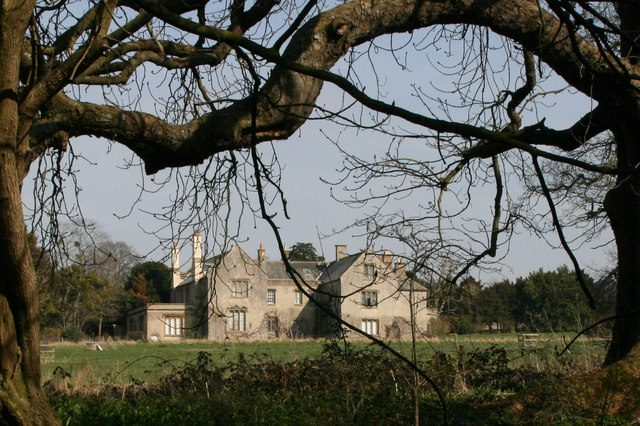
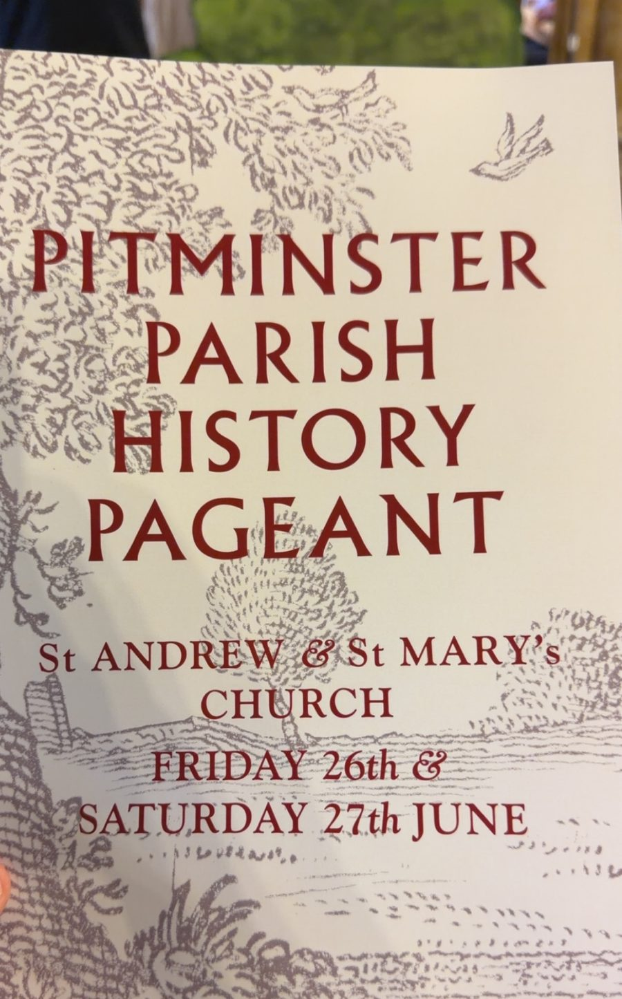
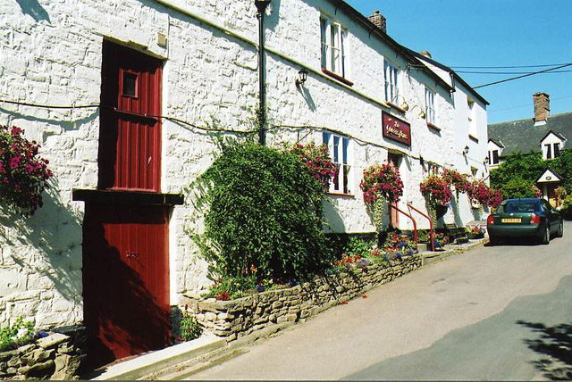
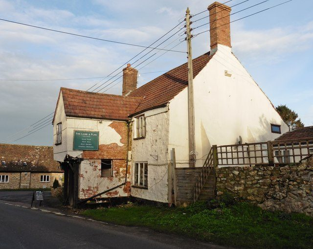
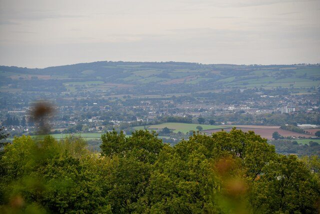
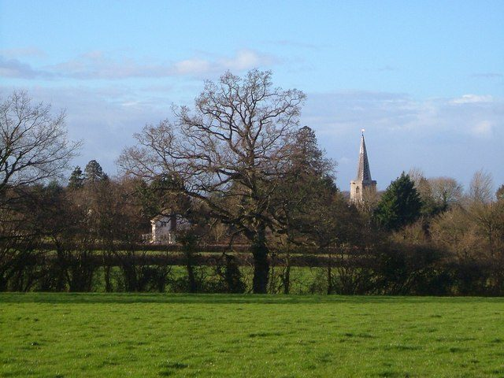

Friends of PitminsterSt Andrew & St Mary, the village in the Blackdown Hills, and the families who sailed from it
The village
Pitminster is a village and parish four miles south of Taunton, on the northern slopes of the Blackdown Hills, looking out over the Vale of Taunton Deane. The parish takes in Blagdon Hill, Angersleigh, Sellick's Green, Duddlestone, Poundisford, Feltham and Woodram, and about 950 people.
Blagdon Hill from the south-west, where the footpath from Howleigh enters the wood. Photograph by Nick Chipchase, CC BY-SA 2.0.
A bishop's manor
The name is usually read as the minster, or mother church, of Pippa's people: a church was here before the Normans. In 938 King Athelstan gave the estate, with Corfe next door, to the Bishop of Winchester, and for the next six centuries Pitminster was part of the bishops' great manor of Taunton Deane. The bishops kept a deer park in the parish; King John came to hunt in it in 1208, and the park's name survives in Poundisford.
Taunton's priory held land at Barton. When the monasteries were dissolved in 1539 the priory's lands there passed to the Coles family, whose alabaster effigies now lie in the chancel of the church. Pitminster and Angersleigh were counted in the Taunton Deane Hundred; after 1894 they were in Taunton Rural District, then Taunton Deane, then Somerset West and Taunton, and since April 2023 the whole county has been run by one council, Somerset Council. The village still has its own parish council, which sets the precept, comments on planning applications and keeps an eye on conservation.
Poundisford
Poundisford Park is a Tudor house built around 1550 for William Hill and still standing in the old park. It stayed with the Hills, who added a dining room in 1692, and then passed to the Welmans in 1706, the Helyars in 1869 and the Vivian-Neals in 1928; A. W. Vivian-Neal went on to write the church's guidebook in 1950. Across the park is its neighbour, Poundisford Lodge.
Poundisford gave the English-speaking world a hymn. Jemima Thompson, who lived there, wrote I think when I read that sweet story of old for her Sunday school class in the village; it was sung in chapels and Sunday schools for a century and more.

Poundisford Lodge, from the stream. Photograph by Nick Chipchase, CC BY-SA 2.0.
What the pageant remembered
On two July evenings in 1976, eighty villagers performed the Pitminster and Corfe Pageant inside the church: fifteen episodes of the parish's history, written by the local historian Joan Peden and staged by the Revd Eric Crowe and his wife, with tickets at fifty pence. It is as good a guide as any to what the village thinks its history is:
King Athelstan's charter of 938, and King John hunting at Poundisford with Bishop Peter des Roches.
The building of the church around 1300, the Dissolution seen through the Prior of Taunton and his monks, and the Coles family taking the priory's lands at Barton.
A dispute in 1630 over replacing the church bells. Richard Trott refused to pay, and a few years later took his family to New England; his story continues on the Across the water page.
Divided loyalties in the siege of Taunton in 1645, and the Monmouth Rebellion of 1685 and what followed it.
The Great Storm of 1703, which damaged the spire.
A foundling, Thomas Basket, left at a cottage at Paradise above Lowton in 1723.
The Pitminster Volunteers, raised between 1798 and 1802 against the French invasion that never came.
Jemima Thompson's hymn, Queen Victoria's jubilee of 1887 marked with a Queen's Acre at Corfe, and the Home Guard and the war dead of 1939 to 1945.

The programme for the 2026 pageant.
Fifty years on
The village did it again. On Friday 26 and Saturday 27 June 2026, half a century after the first, the parish staged a new Pitminster Parish History Pageant inside the church, with painted hills and trees set up in front of the pulpit and the parish's story played out in scenes from the first monks to the ration books of the 1940s. Among the audience were Treat descendants from America, in the village that week for a family reunion.
Around the parish
Blagdon Hill is the largest settlement, strung along the road that climbs south out of the vale towards Honiton; the Post Office added the Hill to its name in the nineteenth century to tell it from the other Blagdon in north Somerset. It has two pubs, the Lamb and Flag and the Blagdon Inn. Pitminster's own pub, the Queen's Arms on Church Road, stands on what is said to be one of the earliest recorded mill sites in Somerset, with a mill here in 1036 belonging to St Swithun's Priory at Winchester, a flour mill in 1804 and a public house after that. Angersleigh, to the west, has its own church, St Michael, fourteenth century and Grade II* listed. Corfe, Pitminster and Trull still share an almshouse charity.

The Queen's Arms, Pitminster. Photograph by Martin Bodman, CC BY-SA 2.0.

The Lamb and Flag, Blagdon Hill. Photograph by Roger Cornfoot, CC BY-SA 2.0.
Above the village the Blackdowns begin. Prior's Park and Adcombe Wood, 104 hectares of old broadleaved woodland and marshy grassland on the north-facing slope, is a Site of Special Scientific Interest, part of it looked after by the Somerset Wildlife Trust, and the footpaths through it come out on Adcombe Hill with the whole vale laid out below. Lower down, the lanes between Woodram, Duddlestone and the church are the oldest kind of English walking: high hedges, a three-way bridge over the stream, and the spire ahead.

From Adcombe Hill. Photograph by Lewis Clarke, CC BY-SA 2.0.

The footpath from Woodram Lane, the spire ahead. Photograph by Derek Harper, CC BY-SA 2.0.
Help us fill this in
These pages are written from the published record and from a distance. The village knows more: the school, the village hall, the bowling club, who farmed which fields, what happened to the Pitminster Volunteers' drum. If you can add to it or correct it, leave a note on the wall or write to the editors. Villagers' photographs, old or new, are especially welcome.